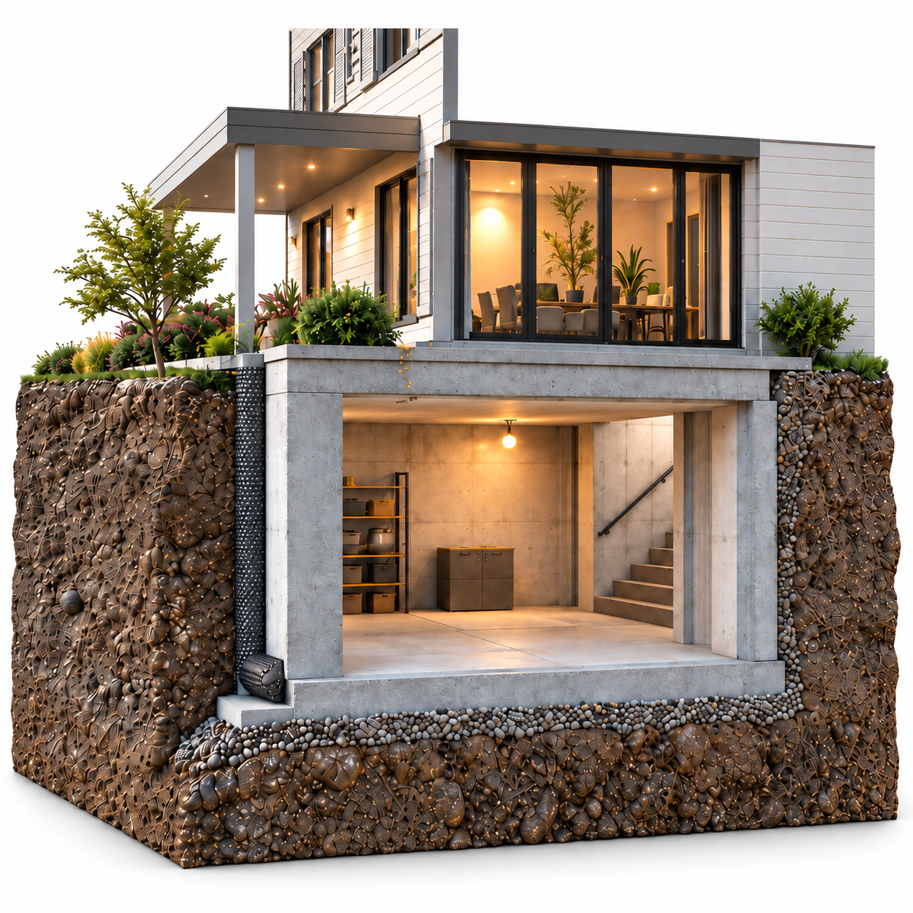
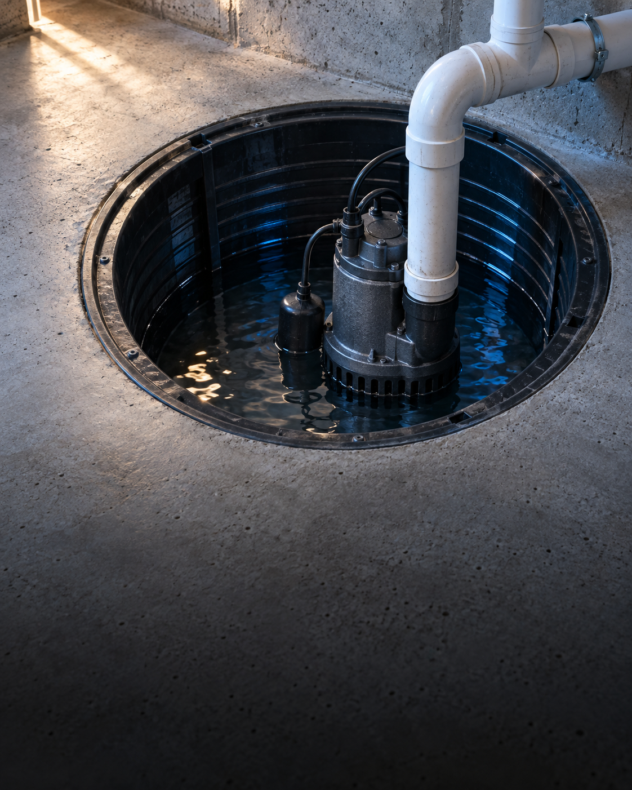
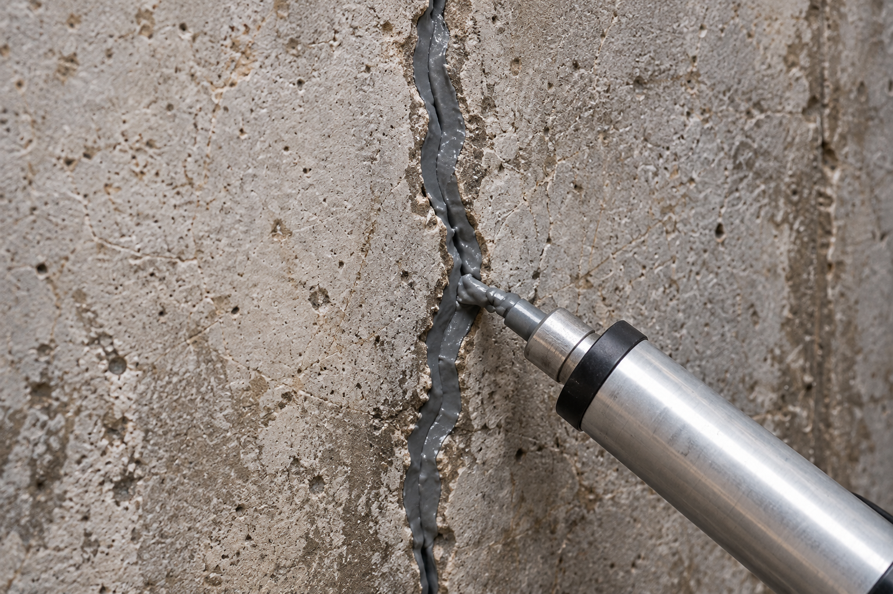

A drier home.
From the
ground up.
Explore basement waterproofing options and share your project with our referral team.
Start your requestIndependent providers. Availability varies by location.

Notice the signs early.
Visible changes can help you explain what is happening in your basement. Start with what you can observe.
Similar signs can have different causes. An independent provider can assess your property and discuss suitable next steps.
Explore your options.
Different projects call for different conversations. Explore these service categories before sharing your request.
Interior waterproofing
Explore approaches that may manage water from inside the basement.

Exterior waterproofing
Learn about options around the outside of the foundation.

Sump pump systems
Explore systems intended to collect and move water from a sump basin.

Foundation crack sealing
Describe visible cracks and explore whether sealing may be relevant.
The appropriate scope depends on the property and a provider’s assessment. A service category is not a diagnosis or a guaranteed recommendation.
See the installationInterior drainage
How it comes together.
Explore the installation below the surface: opening the floor, placing the drain, and restoring the concrete.
Sump pump systems
Give rising water
a way out.
When water collects below your basement, it needs somewhere to go.
After heavy rain or a rise in groundwater, water can build up around the foundation and beneath the floor. It may find its way through cracks or the wall-to-floor joint, leaving wet edges, puddles and damaged finishes or belongings.
A sump system gives collected water a route out: drainage directs it into a basin, and a pump moves it through a discharge pipe away from the foundation. The float responds to the water level, so pumping starts as the basin fills.
Water rises. The pump responds.

Water collects in the basin. The pump waits below the activation level.
Recurring water after rain
A pump can help manage water that reaches the basin before it spreads across the basement floor. The drainage route matters: water elsewhere in the basement must be able to reach the collection point.
A controlled route outside
The basin collects water at a low point. As the float rises, the pump starts and sends that water through the discharge line. It stops at the lower level, ready for the next cycle.
The right system for the source
A pump alone does not address every moisture problem. An independent provider can assess the water source, drainage, discharge route and any existing equipment, including power and backup needs.
Where are you noticing moisture?
A location and a few details can help our team understand your request.
Describe the location, not a diagnosis.
Select a location to see which details can help explain your request.
Moisture on the walls
Describe the wall area, visible marks and whether the moisture follows rain or appears at other times.
Water near floor edges
Describe the corner or wall-floor joint and whether the water is occasional or recurring.
Water near a sump area
Tell us whether a sump system is already present and what you have noticed. An independent provider determines the appropriate next step.
Illustration only. Selecting a location does not diagnose a cause or recommend a system.
From a question to a clearer next step.
Start with a short description of your project. Our role is to help you begin a conversation.
A request does not guarantee a provider connection, an appointment or a particular outcome.
Share your project
Enter your ZIP code, select a service if you know it, and tell us what you have noticed.
Our team reviews it
We review the information you provide and may contact you to clarify your request or discuss possible next steps.
Discuss options independently
If you connect with a provider, discuss the assessment, scope, estimates and availability directly with that business.
A starting point for your next step.
belowline is a free referral website that helps users explore basement waterproofing services and submit requests for assistance. The website owner and operator do not carry out or supervise waterproofing work.
Independent providers determine whether they can help with a project. Their assessments, estimates, schedules and services are their own. Before hiring, users are responsible for checking the provider’s credentials and agreeing to the terms of any work directly with that provider.
Read our Terms of UseQuestions, before you begin.
Does this website perform waterproofing work?
No. This is a referral website. The owner and operator do not perform, supervise or guarantee work carried out by independent providers.
Do I need to know which service I need?
No. Choose “Not sure yet” and describe what you have noticed. A provider’s assessment may be needed to understand the cause and possible options.
Is submitting a request a confirmed appointment?
No. Submitting the form does not confirm an appointment, a price or provider availability. Any arrangements must be discussed directly with the relevant provider.
Who provides an estimate?
An independent provider decides whether to assess the project and provide an estimate. This website does not guarantee estimates, pricing or project outcomes.
What should I include in my request?
Tell us where you notice moisture, when it tends to appear and whether it has happened before. Please leave out entry codes and other sensitive information.
What should I check before hiring someone?
Verify the provider’s licenses, insurance, permits, certifications and other credentials required for the work. Discuss the proposed scope, terms and any written warranty directly with the provider.
Tell us what you’re noticing.
Share a few details about your basement. Our team will review your request and get back to you about possible next steps.
Prefer to write directly?
hello@example.comThis form is for service inquiries and does not provide an emergency response.
Request received
Thank you! We have successfully received your request. Our team will review your information and get back to you shortly.